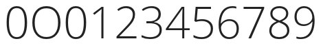
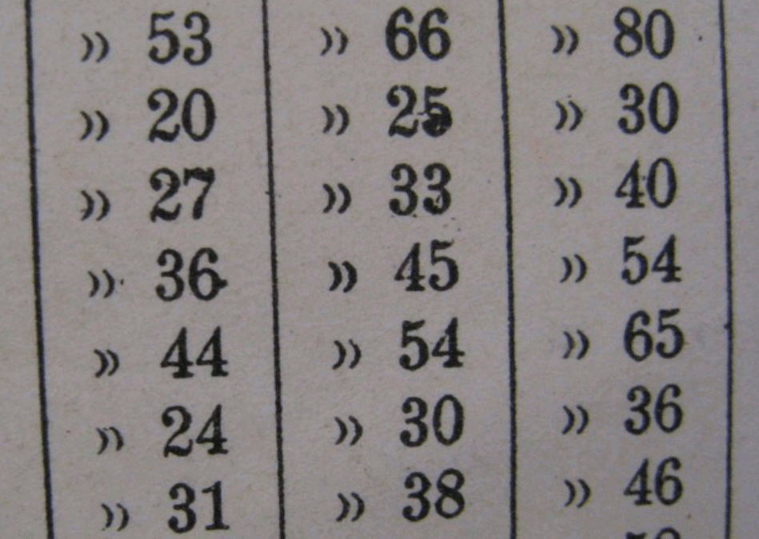
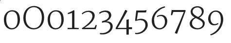

Цифры
Цифры часто вызывают затруднения у дизайнеров шрифтов — по нескольким причинам. Во-первых, цифры имеют очень большое количество кривых. Другая причина заключается в том, что цифры часто используют условные обозначения в форме, которые отличаются (или даже нарушают) визуальные условности, наблюдаемые в остальной части дизайна шрифта. Кроме того, цифры могут иметь очень большое количество штрихов (например, 8 и 5) или большие пробелы (например, 1, 7, а иногда и 2 и 4). Обе ситуации могут быть трудными для управления. Наконец, существует проблема: как убедиться, что ваш ноль отличается от заглавной О.
Может быть полезно взглянуть на цифры, встречающиеся в самых разных шрифтах, чтобы лучше понять, как дизайнеры решают эти проблемы.
В цифрах с большим количеством штрихов (например, 8) обнаружить, что дизайнеры позволяют ширине штрихов становиться немного тоньше, чем это типично для букв шрифта. Подобный подход можно увидеть и в дизайне двойной истории ‘g’.
И наоборот, чтобы компенсировать цифры с большими пропорциями пробелов, некоторые штрихи, вероятно, станут тяжелее, чем обычно.
В случае отделения нуля от заглавной буквы O существует широкий спектр решений — например, сделать ноль уже, чем O, или сделать ноль идеально круглым, или, возможно (особенно в моноширинном шрифте), иметь косую черту через ноль.
Распространенным подходом является использование нуля уже заглавной буквы O, но при этом разделяющей его высоту. Этот подход типичен для цифр с выравниванием, которые являются наиболее распространенным стилем для цифр. Примеры шрифтов, в которых используется этот подход, включают: многие Garamonds, Futura и веб-шрифт Google Open Sans. Ниже Open Sans показывает ноль, заглавную букву О, ноль, а затем другие цифры.

Идеально круглый или почти идеально круглый круг встречается реже, но существует. Примеры шрифтов, в которых используется этот подход, включают веб-шрифт Google Vollkorn, а также другие коммерческие типы, такие как Mrs Eaves, Vendeta и Fleischman BT Pro. Шрифты, в которых используются пропорциональные цифры старого стиля, с большей вероятностью будут использовать этот подход. Иногда также будет виден ноль на высоте x, но более узкий.
Цифры также могут иметь до 11 идентифицируемых стилей, если включать дроби, верхние и нижние индексы. Рассмотреть 5 самых распространенных из них.
Цифры в стиле подкладки
Наиболее распространенные стили цифр, встречающиеся в шрифтах, — Tabular Lining и Proportional Lining. Подкладка относится к высоте, которую используют цифры. Если это стиль подкладки, высота всех цифр будет оптически одинаковой. Разница между числами Tabular Lining и Proportional Lining заключается в том, что в Tabular Lining все числа также имеют одинаковую ширину. Этот стиль полезен для электронных таблиц и любых других целей, где числа полезно располагать аккуратными линиями как по горизонтали, так и по вертикали.

Преимущество пропорциональных номеров подкладок заключается в том, что позволяют выглядеть более визуально, даже потому, что форма и расстояние между цифрами могут варьироваться, чтобы компенсировать различную плотность штрихов.

Ранжирование или цифры старого стиля

Табличные числа — относительно новое изобретение в историческом плане. До их существования существовали пропорциональные числа старого образца. Числа старого стиля полезны, если задача, чтобы числа смешивались и соответствовали стилю текста.

Табличные числа старого стиля встречаются довольно редко. Могут быть полезны в годовом отчете, где нужно ощущение цифр в старом стиле, но с табличным интервалом, типичным для документов такого типа. Изображение выше взято из каталожной карточки библиотеки пишущих машинок.
Цифры гибридного стиля
Гибридные цифры не разделяют высоту прописи или высоту x шрифта, а занимают собственную высоту. Термин “hybrid” относится к смешению цифр старого стиля и цифр подкладки. Примеры шрифтов, в которых используются цифры гибридного стиля, включают Georgia и веб-шрифты Google Merriweather и Donegal. Глифы нуля, заглавной буквы О, нуля, 1, 2, 3 и т. д. из Merriweather показаны ниже.
